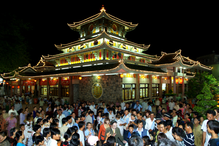

Quảng cáo: 3
Vài nét về miền Tây Vùng đồng bằng sông Cửu Long là vùng cực Nam của Việt Nam, hay còn gọi là vùng đồng bằng sông Mê Kông, vùng đồng bằng Nam Bộ hoặc miền Tây Nam Bộ hoặc nói ngắn gọn là miền Tây thì người dân Việt Nam cũng có thể hiểu được. Miền Tây Nam Bộ gồm có 12 tỉnh (An Giang, Bạc Liêu, Bến Tre, Cà Mau, Đồng Tháp, Tiền Giang, Sóc Trăng, Long An, Hậu Giang, Kiên Giang, Trà Vinh, Vĩnh Long) và 1 thành phố trực thuộc Trung ương (Cần Thơ). Miền Tây nổi tiếng  với nhiều kênh rạch chằng chịt, sông ngòi dày đặc. Các con sông này nguồn nước dẫn chủ yếu là từ sông Cửu Long (Cửu Long giang), là tên gọi chung cho các phân lưu của sông Mê Kông chảy trên lãnh thổ của Việt Nam. Từ Phnom Penh, sông Mê Kông chia thành 2 nhánh: bên phải là sông Ba-thắc (sang Việt Nam gọi là Hậu Giang hay sông Hậu) và bên trái là Mê Kông (sang Việt Nam gọi là Tiền Giang hay sông Tiền), cả hai đều chảy vào khu vực đồng bằng châu thổ rộng lớn ở Nam Bộ Việt Nam, dài chừng 220–250 km mỗi sông. Tại Việt Nam, sông Mê Kông còn có tên gọi là sông Lớn, sông Cái, hay sông Cửu Long. Lưu lượng hai sông này rất lớn, cung cấp nguồn phù sa cho khắp vùng đồng bằng Nam Bộ. Nhờ vậy, cây trái tốt tươi, tạo nên nhiều vườn cây ăn trái trĩu quả. Chính vì thế, vùng đồng bằng sông Cửu Long hay miền Tây Nam Bộ, hình thành nên văn hóa sông nước và văn hóa miệt vườn. Đồng bằng sông Cửu Long có đường bờ biển dài trên 700 km, phía Tây Bắc giáp Campuchia, Đông Bắc tiếp giáp Vùng Đông Nam Bộ, Đông giáp biển Đông, Nam giáp Thái Bình Dương, Tây giáp vịnh Thái Lan. Đồng bằng sông Cửu Long có vị trí đắc địa, rất thuận lợi cho việc phát triển kinh tế biển, khai thác và nuôi trồng thủy sản.